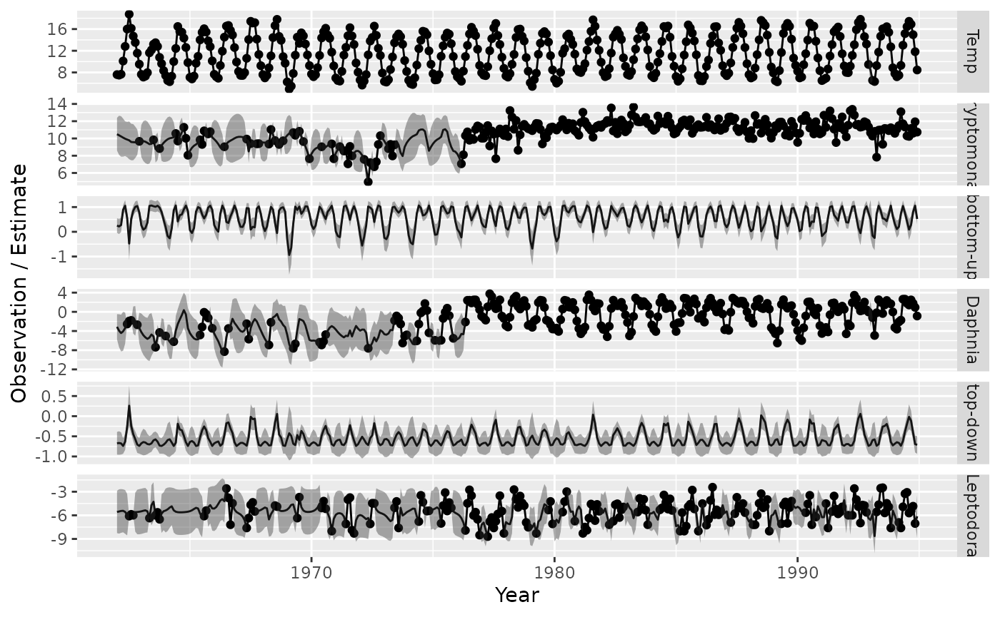
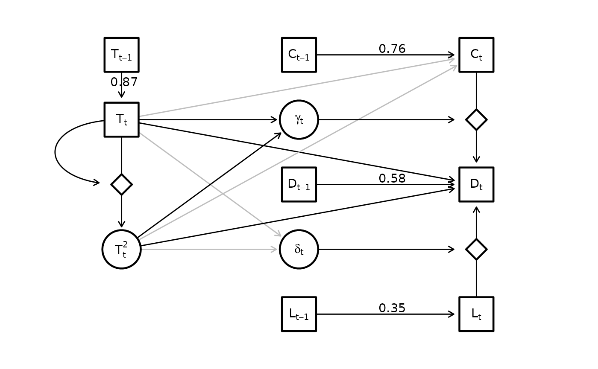

Statistical interactions
James Thorson
Source:vignettes/web_only/statistical_interactions.Rmd
statistical_interactions.RmdStatistical interactions
dsem can be specified to estimate statistical
interactions, where the product of two variables then as an additive
impact on a response.
To show this, we fit a dome-shaped response of species interactions to temperature in a resource-consumer-predator model:
library(dsem)
# Load data
data(lake_washington)
# Format
Z = ts(cbind(
Temp = lake_washington[,"Temp"] - 10,
log(lake_washington[,c("Daphnia","Leptodora","Cryptomonas")]),
"alpha" = NA, "Temp2" = NA, "beta" = NA
), start = 1962, freq = 12)We first define a model with multiple dome-shaped responses to Temp, specifically constructing temperature-squared as a latent variable:
#
sem = "
# Quadratic temperature effect on resource density
Temp -> Cryptomonas, 0, T_to_C
Temp2 -> Cryptomonas, 0, T2_to_C
# Quadratic temperature effect on consumer density
Temp -> Daphnia, 0, T_D
Temp2 -> Daphnia, 0, T2_D
# Resource and Predator impacts on consumer
Cryptomonas -> Daphnia, 0, alpha # C_D
Leptodora -> Daphnia, 1, beta # alpha
# Density dependence
Cryptomonas -> Cryptomonas, 1, ar_C
Daphnia -> Daphnia, 1, ar_D
Leptodora -> Leptodora, 1, ar_L
Temp -> Temp, 1, ar_T
# Form Temp^2
Temp -> Temp2, 0, Temp
Temp2 <-> Temp2, 0, NA, 0.001
# Quadratic temperature on resource-consumer slope
alpha <-> alpha, 0, NA, 0.001
Temp -> alpha, 0, T_alpha
Temp2 -> alpha, 0, T2_alpha
# Quadratic temperature on predator-consumer slope
beta <-> beta, 0, NA, 0.001
Temp -> beta, 0, T_beta
Temp2 -> beta, 0, T2_beta
"We then fit this model using
gmrf_parameterization = "full"
fit = dsem(
tsdata = Z,
sem = sem,
estimate_mu = c("Daphnia","Leptodora","Cryptomonas","alpha","beta"),
control = dsem_control(
use_REML = TRUE,
newton_loops = 0,
gmrf_parameterization = "full",
quiet = TRUE,
extra = FALSE,
getJointPrecision = TRUE
)
)We then plot the temperatures responses
T_j = seq( 5, 19, by = 0.1 )
X_j = T_j - 10
mu_df = data.frame(
Par = colnames(Z),
Est = as.list(fit$sdrep,"Estimate")$mu_j,
SE = as.list(fit$sdrep,"Std. Error")$mu_j
)
plot_interval = function( fit, var, name1, name2, n = 1000, prob = c(0.025,0.975), f_y = identity, ... ){
# fit$sdrep$jointPrecision
mu_i = match( var, c("Daphnia","Leptodora","Cryptomonas","alpha","beta") )
b1_i = subset(summary(fit), name==name1)$parameter
b2_i = subset(summary(fit), name==name2)$parameter
index = c(
grep( "mu_j", rownames(fit$sdrep$jointPrecision) )[mu_i],
grep( "beta_z", rownames(fit$sdrep$jointPrecision) )[c(b1_i,b2_i)]
)
p1 = subset(mu_df, Par==var)$Est
p2 = subset(summary(fit),name==name1)$Estimate
p3 = subset(summary(fit),name==name2)$Estimate
beta = RTMB:::rgmrf0( Q = fit$sdrep$jointPrecision, n = n )[index,]
beta = beta + outer( c(p1,p2,p3), rep(1,n) )
#return(beta)
response = apply( beta, MARGIN = 2, FUN = \(x) x[1] + x[2]*X_j + x[3]*X_j^2 )
interval = apply( response, MARGIN = 1, FUN = quantile, prob = prob )
#
Y_j = p1 + p2 * X_j + p3 * X_j^2
plot( x = T_j, y = f_y(Y_j), type = "l", ylim = range(f_y(interval)), ... )
polygon( x = c(T_j,rev(T_j)), y = f_y(c(interval[1,],rev(interval[2,]))), border = NA, col = rgb(0,0,0,0.2) )
}
par( mfrow = c(2,2), mgp = c(2,0.5,0), tck = -0.02, mar = c(1,1,2.5,1), oma = c(2,2,0,0), xaxs = "i" )
# Resource
plot_interval( fit, "Cryptomonas", "T_to_C", "T2_to_C", f_y = exp, xlab = "", ylab = "", main = "Cryptomonas density", log = "y", xaxt = "n", n = 5000 )
mtext( side = 2, text = "Impact on intercepts", line = 2 )
# Consumer
plot_interval( fit, "Daphnia", "T_D", "T2_D", f_y = exp, xlab = "", ylab = "", main = "Daphnia density", log = "y", xaxt = "n", n = 5000 )
# Bottom-up
plot_interval( fit, "alpha", "T_alpha", "T2_alpha", xlab = "", ylab = "", main = "Cryptomonas impact\non Daphnia", n = 5000 )
mtext( side = 2, text = "Impact on slopes", line = 2 )
# Top-down
plot_interval( fit, "beta", "T_beta", "T2_beta", xlab = "", ylab = "", main = "Leptodora impact\non Daphnia", n = 5000 )
mtext( side = 1, text = c("Temperature (C)"), outer = TRUE, line = c(1) )We next visualize the predicted state-variables
#
df = expand.grid( year = as.vector(time(Z)), var = colnames(Z) )
df$est = as.vector(as.list(fit$sdrep, what = "Estimate", report = TRUE)$z_tj)
df$se = as.vector(as.list(fit$sdrep, what = "Std. Error", report = TRUE)$z_tj)
df$obs = as.vector(Z)
df = subset( df, var != "Temp2" )
df$var = factor( df$var, levels = c("Temp", "Cryptomonas", "alpha", "Daphnia", "beta", "Leptodora") )
#
df[which(df$var=="Temp"),c("obs","est")] = df[which(df$var=="Temp"),c("obs","est")] + 10
#df[which(df$var %in% c("Daphnia","Leptodora","Cryptomonas")),c("obs","est")] = df[which(df$var=="Temp"),c("obs","est")] + 10
#
library(ggplot2)
ggplot(df) +
geom_line( aes( x=year, y = est) ) +
geom_point( aes( x=year, y = obs) ) +
geom_ribbon( aes( x = year, ymin = est - 1.96*se, ymax = est + 1.96*se), alpha = 0.4 ) +
facet_grid( vars(var), scales = "free_y",
labeller = labeller( var = c(Temp = "Temp", Daphnia = "Daphnia", Leptodora = "Leptodora", Cryptomonas = "Cryptomonas",
alpha = "bottom-up", beta = "top-down" ) ) ) +
labs(x = "Year", y = "Observation / Estimate")
#> Warning: Removed 1247 rows containing missing values or values outside the scale range
#> (`geom_point()`).
Finally, we also visualize the estimated graph
library(igraph)
library(ggraph)
g = make_empty_graph(14)
V(g)$name = c("T[t-1]", "T[t]", "T[t]^2", "z1", "alpha", "beta", "C[t]", "D[t]", "L[t]", "z2", "z3", "C[t-1]", "D[t-1]", "L[t-1]" )
V(g)$shape = c( "square", "square", "circle", "diamond", "circle", "circle", "square", "square", "square", "diamond", "diamond", "square", "square", "square" )
V(g)$label = c("T[t-1]", "T[t]", "T[t]^2", "", "gamma[t]", "delta[t]", "C[t]", "D[t]", "L[t]", "", "", "C[t-1]", "D[t-1]", "L[t-1]" )
#
g <- add_edges(g, c("T[t-1]", "T[t]"), attr = list(label = round(subset(summary(fit),path=="Temp -> Temp")$Estimate,2),
type = "solid", col = "black", straight=TRUE, p = NA))
g <- add_edges(g, c("T[t]", "T[t]^2"), attr = list(label = "", type = "solid", col = "black", straight=TRUE, p = NA))
g <- add_edges(g, c("T[t]", "z1"), attr = list(label = "", type = "solid", col = "black", straight=FALSE, p = NA))
#
g <- add_edges(g, c("T[t]", "alpha"), attr = list(label = "", type = "solid", col = "black", straight=TRUE, p = subset(summary(fit),path=="Temp -> alpha")$p_value ))
g <- add_edges(g, c("T[t]", "beta"), attr = list(label = "", type = "solid", col = "black", straight=TRUE, p = subset(summary(fit),path=="Temp -> beta")$p_value))
g <- add_edges(g, c("T[t]^2", "alpha"), attr = list(label = "", type = "solid", col = "black", straight=TRUE, p = subset(summary(fit),path=="Temp2 -> alpha")$p_value))
g <- add_edges(g, c("T[t]^2", "beta"), attr = list(label = "", type = "solid", col = "black", straight=TRUE, p = subset(summary(fit),path=="Temp2 -> beta")$p_value))
#
g <- add_edges(g, c("T[t]", "C[t]"), attr = list(label = "", type = "solid", col = "black", straight=TRUE, p = subset(summary(fit),path=="Temp -> Cryptomonas")$p_value))
g <- add_edges(g, c("T[t]", "D[t]"), attr = list(label = "", type = "solid", col = "black", straight=TRUE, p = subset(summary(fit),path=="Temp -> Daphnia")$p_value))
g <- add_edges(g, c("T[t]^2", "C[t]"), attr = list(label = "", type = "solid", col = "black", straight=TRUE, p = subset(summary(fit),path=="Temp2 -> Cryptomonas")$p_value))
g <- add_edges(g, c("T[t]^2", "D[t]"), attr = list(label = "", type = "solid", col = "black", straight=TRUE, p = subset(summary(fit),path=="Temp2 -> Daphnia")$p_value))
#
g <- add_edges(g, c("alpha", "z2"), attr = list(label = "", type = "solid", col = "black", straight=TRUE, p = NA))
g <- add_edges(g, c("beta", "z3"), attr = list(label = "", type = "solid", col = "black", straight=TRUE, p = NA))
#
g <- add_edges(g, c("C[t]", "D[t]"), attr = list(label = "", type = "solid", col = "black", straight=TRUE, p = subset(mu_df,Par=="alpha")$p_value))
g <- add_edges(g, c("L[t]", "D[t]"), attr = list(label = "", type = "solid", col = "black", straight=TRUE, p = subset(mu_df,Par=="beta")$p_value))
#
g <- add_edges( g, c("C[t-1]", "C[t]"), attr = list(label = round(subset(summary(fit),path=="Cryptomonas -> Cryptomonas")$Estimate,2),
type = "solid", col = "grey", straight=TRUE, p = subset(summary(fit),path=="Cryptomonas -> Cryptomonas")$p_value))
g <- add_edges( g, c("D[t-1]", "D[t]"), attr = list(label = round(subset(summary(fit),path=="Daphnia -> Daphnia")$Estimate,2),
type = "solid", col = "grey", straight=TRUE, p = subset(summary(fit),path=="Daphnia -> Daphnia")$p_value))
g <- add_edges( g, c("L[t-1]", "L[t]"), attr = list(label = round(subset(summary(fit),path=="Leptodora -> Leptodora")$Estimate,2),
type = "solid", col = "grey", straight=TRUE, p = subset(summary(fit),path=="Leptodora -> Leptodora")$p_value))
loc_nodes = rbind(
"T[t-1]" = c(x = 1, y = 4),
"T_t" = c(x = 1, y = 3),
"T^2_t" = c(1,1),
"z1" = c(1,2),
"alpha" = c(2,3),
"beta" = c(2,1),
"C[t]" = c(3,4),
"D[t]" = c(3,2),
"L[t]" = c(3,0),
"z2" = c(3,3),
"z3" = c(3,1),
"C[t-1]" = c(2,4),
"D[t-1]" = c(2,2),
"L[t-1]" = c(2,0)
)
layout = create_layout( g, loc_nodes[,c("x","y")] )
ggraph(layout) +
geom_edge_link2(
arrow = arrow(length = unit(2, "mm")),
end_cap = ggraph::circle(7, 'mm'),
start_cap = ggraph::circle(0, 'mm'),
aes( label = label, linetype = type, col = ifelse(is.na(p)|p<0.05,"black","grey"), filter = straight ),
vjust = -0.2,
hjust = 0.4,
) +
geom_edge_arc(
arrow = arrow(length = unit(2, "mm")),
end_cap = ggraph::circle(7, 'mm'),
start_cap = ggraph::circle(0, 'mm'),
strength = -1,
aes( label = label, linetype = type, col = col, filter = !straight ),
vjust = -0.2,
hjust = 0.4,
) +
geom_node_point(
aes(shape = shape, size = ifelse(shape == "diamond",8,15)),
#size = 15,
stroke = 1.2,
color = "black",
fill = "white"
) +
geom_node_label(
fill = "white",
lwd = 0,
aes(label = label),
parse = TRUE
) +
theme(panel.background = element_rect(fill = NA, color = NA)) +
coord_cartesian( xlim = c(0.5, 3.5), ylim = c(-0.5, 4.5) ) +
scale_shape_manual(values = c("circle" = 21, "square" = 22, "diamond" = 23), guide = "none") + # ?scale_shape
scale_edge_linetype_manual(values = c("solid" = "solid", "dotted" = "solid"), guide = "none") +
scale_edge_colour_manual(values = c("black" = "black", "grey" = "grey"), guide = "none") +
scale_size( range = c(6,15), guide = "none" )
Runtime for this vignette: 21.47 mins